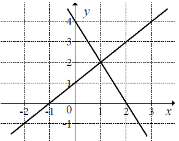

Matura 2014 maj
Na rysunku przedstawiono geometryczną interpretację jednego z niżej zapisanych
układów równań.  Wskaż ten układ.
A.\(\begin{cases} {y=x-1}\\ {y=-2x+4} \end{cases} \)
B.\(\begin{cases} {y=x-1}\\ {y=2x+4} \end{cases} \)
C.\(\begin{cases} {y=x+1}\\ {y=-2x+4} \end{cases} \)
D.\(\begin{cases} {y=x+1}\\ {y=2x+4} \end{cases} \)
C
Jeżeli liczba \(78\) jest o \(50\%\) większa od liczby \( c \), to
A.\(c=39 \)
B.\(c=48 \)
C.\(c=52 \)
D.\(c=60 \)
C
Wartość wyrażenia \( \frac{2}{\sqrt{3}-1}-\frac{2}{\sqrt{3}+1} \) jest równa
A.\(2 \)
B.\(2\sqrt{3} \)
C.\(-2 \)
D.\(-2\sqrt{3} \)
A
Suma \( \log_8 16+1 \) jest równa
A.\(\log_8 17 \)
B.\(\frac{3}{2} \)
C.\(\frac{7}{3} \)
D.\(3 \)
C
Wspólnym pierwiastkiem równań \( (x^2-1)(x-10)(x-5)=0 \)
i \( \frac{2x-10}{x-1}=0 \) jest liczba
A.\(10 \)
B.\(5 \)
C.\(1 \)
D.\(-1 \)
B
Funkcja liniowa \( f(x)=(m^2-4)x+2 \) jest malejąca, gdy
A.\(m\in (-\infty,-2) \)
B.\(m\in (2,+\infty) \)
C.\(m\in \lbrace -2,2 \rbrace \)
D.\(m\in (-2,2) \)
D
Na rysunku przedstawiono fragment wykresu funkcji kwadratowej \( f \).  Funkcja \( f \) określona jest
wzorem
Funkcja \( f \) określona jest
wzorem
Funkcja \( f \) określona jest
wzorem A.\(f(x)=-\frac{1}{2}(x-3)(x+1) \)
B.\(f(x)=\frac{1}{2}(x-3)(x+1) \)
C.\(f(x)=-\frac{1}{2}(x+3)(x-1) \)
D.\(f(x)=\frac{1}{2}(x+3)(x-1) \)
A
Punkt \( C=(0,2) \) jest wierzchołkiem trapezu \( ABCD \), którego podstawa \( AB
\) jest zawarta w prostej o równaniu \( y=2x-4 \). Wskaż równanie prostej zawierającej podstawę \(
CD \).
A.\(y=\frac{1}{2}x+2 \)
B.\(y=-2x+2 \)
C.\(y=-\frac{1}{2}x+2 \)
D.\(y=2x+2 \)
D
Dla każdej liczby \( x \), spełniającej warunek \( -3 \lt x \lt 0 \), wyrażenie \(
\frac{|x+3|-x+3}{x} \) jest równe
A.\(2 \)
B.\(3 \)
C.\(-\frac{6}{x} \)
D.\(\frac{6}{x} \)
D
Pierwiastki \( x_1, x_2 \) równania \( 2(x+2)(x-2)=0 \) spełniają warunek
A.\(\frac{1}{x_1}+\frac{1}{x_2}=\frac{1}{2} \)
B.\(\frac{1}{x_1}+\frac{1}{x_2}=\frac{1}{4} \)
C.\(\frac{1}{x_1}+\frac{1}{x_2}=-1 \)
D.\(\frac{1}{x_1}+\frac{1}{x_2}=0 \)
D
Liczby \( 2,-1,-4 \) są trzema początkowymi wyrazami ciągu arytmetycznego \( (a_n)
\) określonego dla liczb naturalnych \( n\ge 1 \). Wzór ogólny tego ciągu ma postać
A.\(a_n=-3n+5 \)
B.\(a_n=n-3 \)
C.\(a_n=-n+3 \)
D.\(a_n=3n-5 \)
A
Jeżeli trójkąty \( ABC \) i \( A'B'C' \) są podobne, a ich pola są, odpowiednio,
równe \( 25 \) cm2 i \( 50 \) cm2, to skala podobieństwa \( \frac{A'B'}{AB} \)
jest równa
A.\(2 \)
B.\(\frac{1}{2} \)
C.\(\sqrt{2} \)
D.\(\frac{\sqrt{2}}{2} \)
C
Liczby: \( x-2,\ 6,\ 12 \), w podanej kolejności, są trzema kolejnymi wyrazami
ciągu geometrycznego. Liczba \( x \) jest równa
A.\(0 \)
B.\(2 \)
C.\(3 \)
D.\(5 \)
D
Jeżeli \( \alpha \) jest kątem ostrym oraz \( \operatorname{tg}{\alpha
}=\frac{2}{5} \), to wartość wyrażenia \( \frac{3\cos{\alpha }-2\sin{\alpha }}{\sin{\alpha
}-5\cos{\alpha }} \) jest równa
A.\(-\frac{11}{23} \)
B.\(\frac{24}{5} \)
C.\(-\frac{23}{11} \)
D.\(\frac{5}{24} \)
A
Liczba punktów wspólnych okręgu o równaniu \( (x+2)^2+(y-3)^2=4\ \) z osiami układu
współrzędnych jest równa
A.\(0 \)
B.\(1 \)
C.\(2 \)
D.\(4 \)
B
Wysokość trapezu równoramiennego o kącie ostrym \( 60^\circ \) i ramieniu długości
\( 2\sqrt{3} \) jest równa
A.\(\sqrt{3} \)
B.\(3 \)
C.\(3\sqrt{3} \)
D.\(2 \)
B
Kąt środkowy oparty na łuku, którego długość jest równa \( \frac{4}{9} \) długości
okręgu, ma miarę
A.\(160^\circ \)
B.\(80^\circ \)
C.\(40^\circ \)
D.\(20^\circ \)
A
O funkcji liniowej \( f \) wiadomo, że \( f(1)=2 \). Do wykresu tej funkcji należy
punkt \( P=(-2,3) \). Wzór funkcji \( f \) to
A.\(f(x)=-\frac{1}{3}x+\frac{7}{3} \)
B.\(f(x)=-\frac{1}{2}x+2 \)
C.\(f(x)=-3x+7 \)
D.\(f(x)=-2x+4 \)
A
Jeżeli ostrosłup ma \( 10 \) krawędzi, to liczba ścian bocznych jest równa
A.\(5 \)
B.\(7 \)
C.\(8 \)
D.\(10 \)
A
Stożek i walec mają takie same podstawy i równe pola powierzchni bocznych. Wtedy
tworząca stożka jest
A.sześć razy dłuższa od wysokości walca
B.trzy razy dłuższa od wysokości walca
C.dwa razy dłuższa od wysokości walca
D.równa wysokości walca
C
Liczba \( \left ( \frac{1}{\left (\sqrt[3]{729}+\sqrt[4]{256}+2 \right)^0} \right
)^{-2} \) jest równa
A.\(\frac{1}{225} \)
B.\(\frac{1}{15} \)
C.\(1 \)
D.\(15 \)
C
Do wykresu funkcji, określonej dla wszystkich liczb rzeczywistych wzorem \(
y=-2^{x-2} \), należy punkt
A.\(A=(1,-2) \)
B.\(B=(2,-1) \)
C.\(C=(1,\frac{1}{2}) \)
D.\(D=(4,4) \)
B
Jeżeli \( A \) jest zdarzeniem losowym, a \( A' \) - zdarzeniem przeciwnym do
zdarzenia \( A \) oraz zachodzi równość \( P(A)=2P(A')\ \), to
A.\(P(A)=\frac{2}{3} \)
B.\(P(A)=\frac{1}{2} \)
C.\(P(A)=\frac{1}{3} \)
D.\(P(A)=\frac{1}{6} \)
A
Na ile sposobów można wybrać dwóch graczy spośród \( 10 \) zawodników?
A.\(100 \)
B.\(90 \)
C.\(45 \)
D.\(20 \)
C
Mediana zestawu danych \( 2, 12, a, 10, 5, 3 \) jest równa \( 7 \). Wówczas
A.\(a=4 \)
B.\(a=6 \)
C.\(a=7 \)
D.\(a=9 \)
D
Wykresem funkcji kwadratowej \( f(x)=2x^2+bx+c \) jest parabola, której
wierzchołkiem jest punkt \( W=(4,0) \). Oblicz wartości współczynników \( b \) i \( c \).
\(b=-16\), \(c=32\)
Rozwiąż równanie \( 9x^3+18x^2-4x-8=0 \).
\(x=-2\) lub \(x=\frac{2}{3}\) lub \(x=-\frac{2}{3}\)
Udowodnij, że każda liczba całkowita \( k \), która przy dzieleniu przez \( 7 \)
daje resztę \( 2 \) ma tę własność, że reszta z dzielenia liczby \( 3k^2 \) przez \( 7 \) jest równa
\( 5 \).
Na rysunku przedstawiono fragment wykresu funkcji \( f \), który powstał w wyniku
przesunięcia wykresu funkcji określonej wzorem \( y=\frac{1}{x} \) dla każdej liczby rzeczywistej \(
x\ne 0 \). 
a) Odczytaj z wykresu i zapisz zbiór tych wszystkich argumentów, dla
których wartości funkcji \( f \) są większe od \( 0 \).
b) Podaj miejsce zerowe funkcji \( g \) określonej wzorem \( g(x)=f(x-3) \).
b) Podaj miejsce zerowe funkcji \( g \) określonej wzorem \( g(x)=f(x-3) \).
a) \(x\in (2;3)\)
b) \(x=6\)
Ze zbioru liczb {1, 2, 3, 4, 5, 6, 7, 8} losujemy dwa razy po jednej liczbie ze
zwracaniem. Oblicz prawdopodobieństwo zdarzenia \( A \), polegającego na wylosowaniu liczb, z
których pierwsza jest większa od drugiej o \(4\) lub \(6\).
\(P(A)=\frac{3}{32}\)
Środek \( S \) okręgu opisanego na trójkącie równoramiennym \( ABC \), o ramionach
\( AC \) i \( BC \), leży wewnątrz tego trójkąta.  Wykaż, że miara kąta wypukłego \( ASB \) jest cztery razy większa od miary
kąta wypukłego \( SBC \).
Wykaż, że miara kąta wypukłego \( ASB \) jest cztery razy większa od miary
kąta wypukłego \( SBC \).
Wykaż, że miara kąta wypukłego \( ASB \) jest cztery razy większa od miary
kąta wypukłego \( SBC \). Pole powierzchni całkowitej prostopadłościanu jest równe \( 198 \). Stosunki
długości krawędzi prostopadłościanu wychodzących z tego samego wierzchołka prostopadłościanu to \(
1:2:3 \). Oblicz długość przekątnej tego prostopadłościanu.
\(3\sqrt{14}\)
Turysta zwiedzał zamek stojący na wzgórzu. Droga łącząca parking z zamkiem ma
długość \(2{,}1\) km. Łączny czas wędrówki turysty z parkingu do zamku i z powrotem, nie licząc
czasu poświęconego na zwiedzanie, był równy \(1\) godzinę i \(4\) minuty. Oblicz, z jaką średnią
prędkością turysta wchodził na wzgórze, jeżeli prędkość ta była o \( 1 \) km/h mniejsza od średniej
prędkości, z jaką schodził ze wzgórza.
\(v=3{,}5\) km/h
Kąt \( CAB \) trójkąta prostokątnego \( ACB \) ma miarę \( 30^\circ \). Pole
kwadratu \( DEFG \), wpisanego w ten trójkąt (zobacz rysunek), jest równe \( 4 \). Oblicz pole
trójkąta \( ACB \). 
\(P=4+\frac{19\sqrt{3}}{6}\)